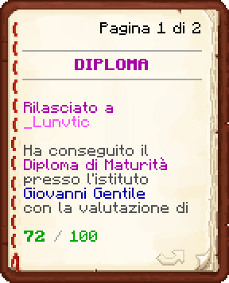

Luigi Martino nasce a San Pietroburgo, in una famiglia umile legata da generazioni al lavoro artigianale. A causa delle difficoltà economiche e sociali in Russia, la famiglia è costretta a vendere la falegnameria e a trasferirsi a Pordenone, in Italia.
Successivamente si trasferisce a NeoTecno dove frequenta l'istituto cittadino conseguendo il Diploma. Decide di intraprendere il percorso universitario laureandosi in Economia e in Lingue Straniere. Durante il percorso formativo ha svolto numerosi lavori nella città di NeoTecno, ma solo alcuni di questi l'hanno cambiato profondamente. Uno di questi è la Posta, dove raggiunge il ruolo di Supervisore IPN e dove conosce tantissime persone che diventeranno suoi amici stretti. Ha svolto anche una carriera politica, divenendo Congressuale e successivamente Segretario di Stato.
Col tempo decide di realizzare uno dei suoi sogni più grandi: diventare Vigile del Fuoco, mestiere che svolge ancora oggi.
 Laurea in Lingue Straniere
Laurea in Lingue Straniere
 Laurea in Economia
Laurea in Economia
 Diploma
Diploma
